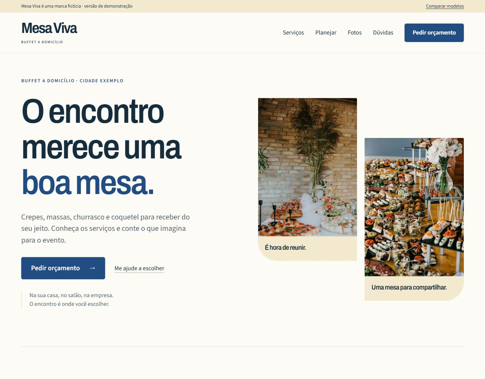

Apresentação compacta
Uma página curta para explorar hierarquia e primeiro contato.
Explorar estudo 01 ↗Arquivo do processo
Estes exemplos preservam etapas de composição e interação do projeto. Não representam planos comerciais. A demonstração principal está na pasta final.
Uma página curta para explorar hierarquia e primeiro contato.
Explorar estudo 01 ↗Mais espaço para conteúdo e ampliação de imagens.
Explorar estudo 02 ↗Carrossel, seleção de serviços e preparação de um pedido.
Explorar estudo 03 ↗Serviços detalhados, sugestões e galeria filtrável.
Explorar estudo 04 ↗Registro visual anterior
A captura abaixo documenta uma versão anterior, com abertura em mosaico e paleta azul. Ela não representa a interface atual.
